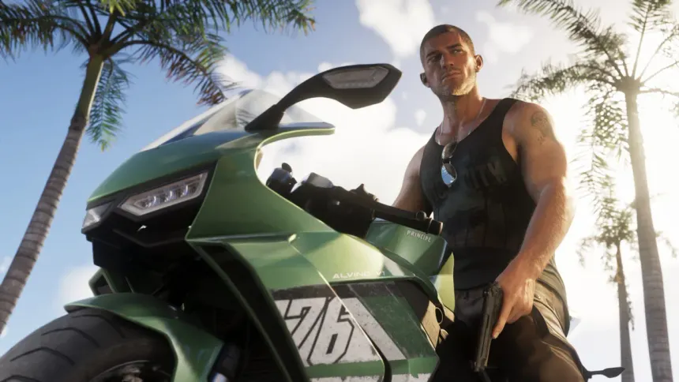

¿Qué es GTA 6?
Grand Theft Auto VI es un videojuego de acción y mundo abierto desarrollado por Rockstar Games. La historia está ambientada en Leonida y tiene como protagonistas a Jason y Lucia.
Personajes principales
Jason Duval

Jason es uno de los protagonistas de GTA 6 y comparte la aventura con Lucia.
Lucia Caminos
Lucia es la otra protagonista del videojuego y forma parte de la historia junto a Jason.
El mundo de GTA VI
El videojuego se desarrolla en Leonida, un estado ficticio inspirado en Florida, donde destaca la ciudad de Vice City.
Datos del videojuego
| Característica | Información |
|---|---|
| Desarrolladora | Rockstar Games |
| Género | Acción y mundo abierto |
| Protagonistas | Jason y Lucia |
| Ambientación | Leonida y Vice City |